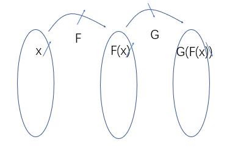
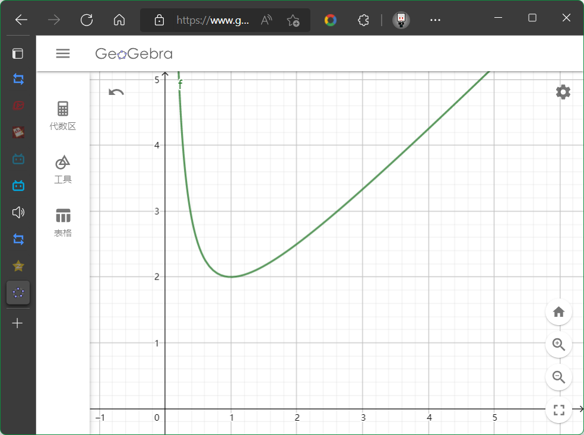

有了互联网, 你可以学习任何知识!
我们现在所处的模式: 被告知要最大化分数, 来得到所谓理想的结果.
为什么要这样做? 他们说的真的可信吗?
我们都是活生生的人, 从小就被不由自主地教导用最小的付出获得最大的得到, 经常会忘记我们究竟要的是什么. 我承认我完美主义, 但我想每个人心中都有那一份求知的渴望和对真理的向往, "大学"的灵魂也就在于超越世俗, 超越时代的纯真和理想 -- 我们不是要讨好企业的毕业生, 而是要寻找改变世界的力量.
大家一定有一个共识: 提升能力是硬本事.
基于此, 大家就有了实行学习(术)诚信的前提条件.
蒋炎岩语录:
大家在这个全民内卷, 不劳而获的时代, 但是想要坚持这一点(学术诚信)还是有一点难的. 但我觉得如果你能坚持下来, 你就能变成一个很不一样的人.
困难的东西总是存在简单的解释. 简单, 意味着用正确的或者专业的视角把整个学科的知识体系构建起来, 简单, 恰恰意味着专业的训练和痛苦的折磨. 然后我就会提到那句话说"Real power cant be given, it must be taken", 我们试图给你们的只是我们的一厢情愿, 你们要在你们的programatic里面体会我们的用心. 你们要去'take'他, 就像我今天讲的, 你们就take了这个想法, 这就有点不一样了.
转化成代数形式? 因为这是两个数的比较关系...
\(f(x)\) 定义域 \(D\) 内一个区间 \(M\) (不一定整体), \(\forall x_1, x_2 \in M, x_1<x_2\) . 若 \(f(x_1)<f(x_2)\) , 称 \(f(x)\) 为区间 \(M\) 上的增函数. 若 \(f(x_1)>f(x_2)\) , 称 \(f(x)\) 为区间 \(M\) 上的减函数. 统称为"有单调性".
注意
例子: \(f(x)=1/x\) 在定义域上是减函数? \(f(x)=x^2\) 的单调性, 区间的开闭?
因为 \(x_2\) 大, 所以 \(x_2^3\) 大, 所以证毕, 还挺轻松?
$$ \begin{aligned} & f\left(x_{1}\right)-f\left(x_{2}\right) \\ =& x_{1}^{3}-x_{2}^{3} \\ =&\left(x_{1}-x_{2}\right)\left(x_{1}^{2}+x_{1} x_{2}+x_{2}^{2}\right) \\ =& \underbrace{\left(x_{1}-x_{2}\right)}_{<0}[\underbrace{\left(x-\frac{x_{2}}{2}\right)^{2}+\frac{3}{4} x_{2}^{2}]}_{\geq0} \end{aligned} $$
技能点: 因式分解, 配方.
\(f(x)=x^3+x\) 的单调性?
如何说明 \(h(x)\nearrow=f(x)\nearrow+g(x)\nearrow\) ?
(3) 函数的运算
\(\nearrow+\nearrow=\nearrow\) \(\searrow+\searrow=\searrow\) \(\nearrow-\searrow=?\) \(\searrow-\nearrow=?\)
看Ex4. 正函数乘/除增函数? 找一点具体的函数试试, 再考虑一般.
单调性? 和内外层函数的关系有关系?
画圈圈图! (举个例子)  经过探讨发现, 同增异减(两层复合), 不要死记, 后面有误导的可能!
三个呢? \(p=(h\nearrow)\circ (g\searrow)\circ (f\searrow)\)
例子: \(f(x)=\dfrac{1}{x^2+2x+2}\) , 注意分类讨论之.
例子(分更多类Ver.): \(f(x)=\dfrac{1}{x^2+2x+2}\) , 注意分类讨论之.
例子(另一方向分更多类Ver.): \(f(x)=x^2-1, g(x)=x^2, h(x)=g(f(x))=x^4-2x^2+1\) . 单调区间是什么?
看Ex5.
生成一下 \(f(x)=|x-a|\) 的函数图像( \(a\) 是常数)
生成一下 \(f(x)=|x-1|+|x-2|\) 的函数图像
生成一下 \(f(x)=|x-1|+|x-2|+|x-3|\) 的函数图像
来个好玩的Ex6.
那么如果 \(f(x)=|2x-1|+|x-1|\) 呢?
转化成功! 叠了几层就相当于斜率是几!
那么如果 \(f(x)=|x-1|+|2x-1|+|3x-1|+|4x-1|+|5x-1|\) , 取到最小值, \(x\) 是几?
思考: \(|x-1|-|x-2|\) 会怎样?

有渐近线(asymptote)的一个函数.
如何证明这件事? 留作练习Ex7.
东西有点多, 但是多学点知识总是好的.
定义(Def.) \(f(x)\) 定义域为 \(D\) , \(\forall x\in D, -x\in D\) , 如果 \(f(-x)=f(x)\) , 称 \(f(x)\) 为偶函数.
定义(Def.) \(f(x)\) 定义域为 \(D\) , \(\forall x\in D, -x\in D\) , 如果 \(f(-x)=-f(x)\) , 称 \(f(x)\) 为奇函数.
也叫奇偶性.
学数学, 要有设身处地的直观感受!
像极了吞负号, 吐负号.
注意:
为什么不叫轴心性? 最早发现的时候是去考察 \(x^n\) 的性质.
类似的现象, 你将在命题以及其关系一节学到.
With great power comes great responsibility.